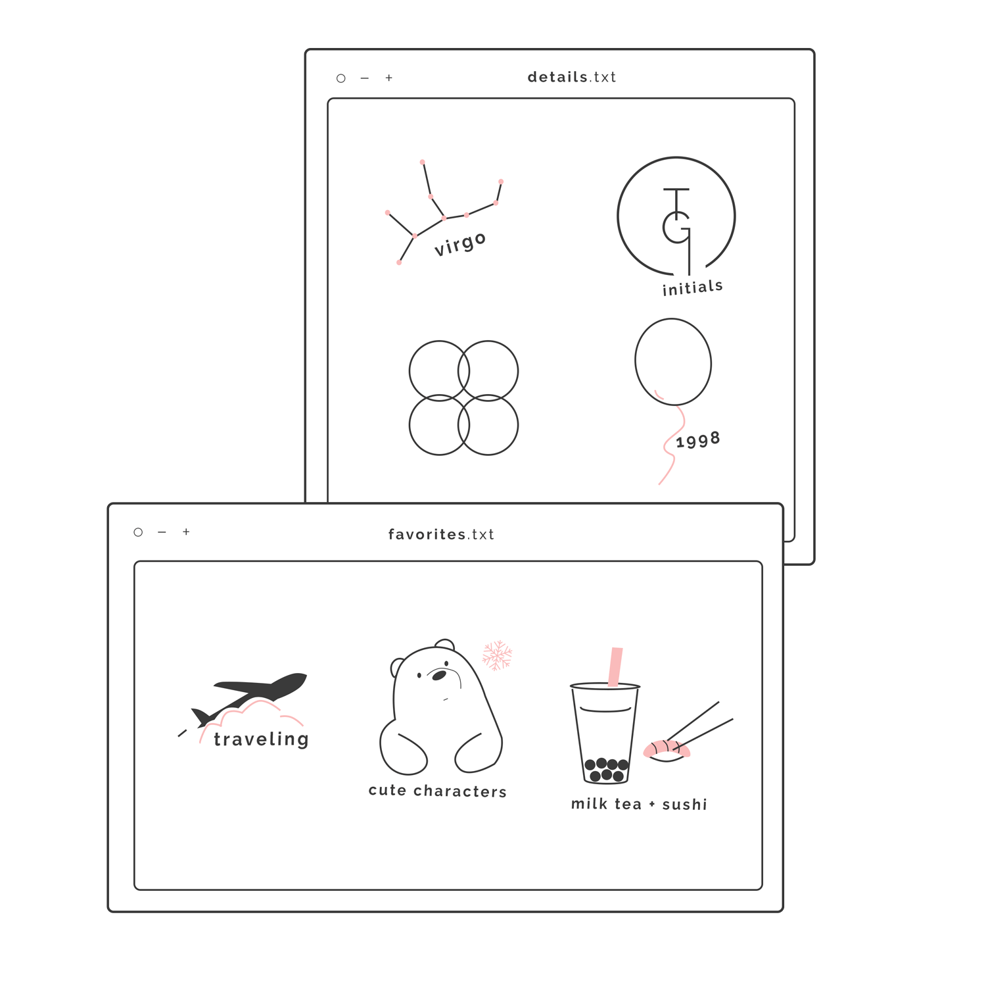
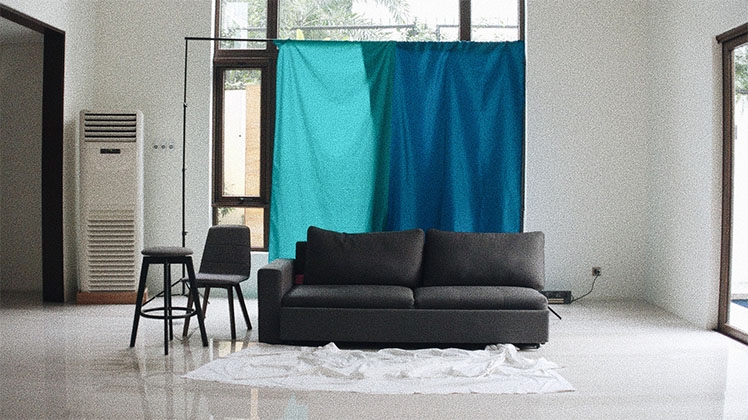
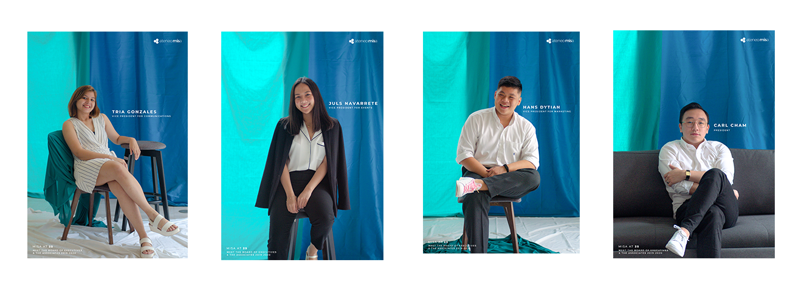
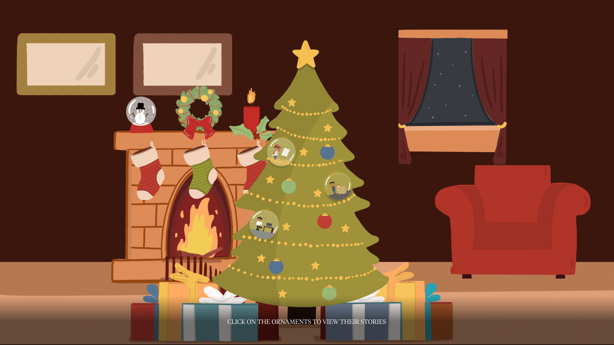
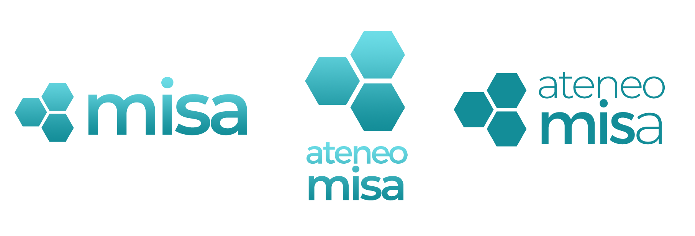

Hello!
Beatrix Marie P. Gonzales (Tria)
A passionate creative and a committed fresh graduate from the Ateneo de Manila University with a Bachelor of Science in Management Information Systems, a Specialization in Enterprise Systems and a Minor in Korean Studies, who is focused on design and analysis. I am mainly a Visual Designer and a Videographer, with an extensive background in User Experience & Interface, Graphic Design, Project Management, and Systems Analysis.

Works


{kind=link}
THE GUIDON Online
Project Team
Role: Designer (Digital Development Staffer 2019-2020)
Development: Miggy Pinaroc
Writing: Jasey Cruz and Enrique Halili
Status
Completed, not yet published
Description
FOR 90 years, The GUIDON has committed itself to providing its readers with accurate and engaging content, made accessible through newsstands across the campus. After the publication launched its online platforms in 2008, it has steadily begun to delve into the world of digital journalism. Looking towards the future, The GUIDON hopes to fully transition into an online publication by its 100th year.
Developed by Miggy Pinaroc (Digital Development Staffer)
Written by Jasey Cruz and Enrique Halili (Internals Staffers)
Designer's Note
For the celebration of the 90 years of the publication, The GUIDON wanted to release an interactive article regarding their slow transition towards an online one in the coming year. I was then tasked to design the interactive without any prior website pegs given, and simply just the article at hand with a few suggested animations of their liking.
With that, I had to research on possible pegs for the Interactive. What I suddenly remembered was people reacting to the Apple Macbook and iPhone 11 Pro websites before. A lot of users were astonished by how the product was presented with the use of a simple scroll function to go through the website. Therefore, I decided to present the article the same way. (Note: Some desired transitions that were supposed to mimic the ones from the Apple websites like the laptop zooming out or the search bar sticking to the top of the laptop weren't reflected in the final website, but seen in the Figma prototype, due to development limitations. However, the final transitions done were still approved and checked upon with my developer counterpart.)
I simply used the default The GUIDON Typeface in their usual articles as well as the official The GUIDON palettes. Gradients of The GUIDON colors were used in order for the colors to not be together with touches of red-orange-violet shades as an adjustment made to a feedback regarding the colors used initially to be plain and limited.
To start off the interactive, I wanted the reader to immediately understand what the following article would be about. I made an expanding search bar animation to present the title, which immediately transitions to the laptop illustration to encapsulate the main idea of The GUIDON Online. This follows through with the rest of the article with graphics such as the phone graphic, vectorized illustrations, and other The GUIDON images used.
In order for it to be a succesful interactive, I must then find a way for the user to simply not just feel they are reading a plain article full of just words . Aside from the animated transitions done throughout the article through scrolling, for the pros and cons section, which was just presented in the plain text as a table, I decided to separate each point to not only give emphasis but to also enable more scroll interaction between the website and the user.
To further add to the engagement of the users, instead of the static visual graphic suggested by the writers for the quotes for the future application, I presented these in a way that the users are able to voluntarily click on the features of the layout in order to see the quote (as seen below). This does not only add to the user's interactive experience while reading the article, but it also gives emphasis and importance to what is in store for the publication. By highlighting this interactive in the article, a user is able to have a taste of what Guidon plans for its app in the future.
The purpose of this article is to celebrate the 90th year of The GUIDON and present the future plans for the platform. With this Interactive showing the near possible transition of the publication online, it officially marks as the start of The GUIDON Online.
MISA Meet the Board of Executives and the Associates 2019-2020
Role: Designer and Videographer (Vice President for Communications 2019-2020)
Spiel Writing: Mae Buhain and OJ Trinidad
Photos: Mae Buhain
Status
Published on Facebook (Playlist and Album) and (Instagram)
Description
With its 25th year, Ateneo MISA proudly presents its 25th set of Board of Executives and the Associates. Get to learn and know more about the individuals that aim to heighten the experience of being a MISAn. Simply BETA | Simply MISA
Designer/Videographer's Note
This annual project by the Communication Cluster was made to present the board of the executives and the associates for that academic year. It was the main medium for the people behind the organization to be known and recognized by the members. With that, I wanted to the members to see who we are through various promotions.
For this year, like what I started last year as an AVP, I planned to create videos for the clusters, profile photos for each officer, an album showing all of BETA, and additional new teaser to start up the project.
My AVPs and I gathered pegs already for the photoshoot and the videos to be done. We aspired to highlight the brand of the organization (especially following its rebranding) through our colors and business tech image, but at the same time show to the members a personal side of each member of BETA.
For the photoshoot, we went for a curtain like setup for the photoshoot with the use of the teal color with an accompanying blue color. The use of the stool, chair, and couch against the cloth background was to have a minimalistic feel to the photo as well as to highlight the BETA officer itself without any additional component in the shot. The props were also all dark grey as one of MISA's primary colors as well as highlighting it against the light cloth in the background. A while cloth is casually or messily placed at the bottom of the seats for added texture and color in the photos.
This simple setup were highlighted in most of the promos through the behind-the-scenes style. The backdrop of the setup itself were also used in the teaser graphic and for the Instagram filler covers. To further give emphasis on the overall simplicity of the theme style, in the spiel, Simply BETA, Simply MISA were used as well.


Each member were also to wear anything white that is smart-casual, to show the image of formality and refinement but at the same relaxed, as what the org should be. Every person was also given the choice to select the particular prop they want to use: stool, chair, or even the couch (although this was only done for the president).

For the group photos, my AVPs and I decided to have both formal and casual shots. The casual shots contain props that would help someone looking at the photo understand what they do in that particular cluster. The layout of the photos are placed against a white background with the text underneath for simplicity and elegance.
Next up are the videos! There were 4 videos in total with two offices/clusters per video. Each video focuses on a central theme in order to learn something about the members of those clusters. The topics of the videos focused on their goals, favorites, wishes, and memories (Stylized as “My Goals" ) The output to be done is similar to this peg which lets the person answer the question in short answers in a sit down shot, while at the same time showing footages of the behind-the-scenes of the photoshoot once again.
Meet the BETA 2019-2020 fulfilled its main purpose of recognizing and learning about the board and their associates, who work their hardest to make MISA achieve its goals during the term. This project was made to return to these people everything they have done to the org by simply meeting them.
Santa's Real Elves
Project Team
Role: Designer (Digital Development Staffer 2019-2020)
Development: Cobbie Quintos and Harvey Sison
Illustration: Mika Medina
Writing: Keziah Maru Z. Pasion, Andrea Tibayan, and Andrea Mikaela Llanes
Status
Published on THE GUIDON Interactive
Description:
Every Christmas season, there are some Filipinos who may see the holidays as just another ordinary working day. The GUIDON explores some of their stories through this interactive.
Designer's Note
After having the DesignCon with the writers, developer, graphic artist, and their executive counter parts regarding the interactive, the general description of the article to be made was having to show those who still have to work during Christmas amidst the national holiday. The team wanted to have an interactive that will show the Christmas spirit but at the same time highlight the stories of those to be interviewed. They (the writers) shared their ideas for design presentation such as a Christmas tree with colored Christmas balls relating to their work colors or the ornaments being the actual job that they do (like a car for the transportation service) with a side popup to be showed when hovered or even a redirect to a new page, and other suggestions. After that meeting, it was still up to me on how the Interactive will be presented. Thus, considering their suggestions, the purpose of the website, which is to show the life of the workers, and the appropriate interface for the user, I ended up with a general profile for the interactive, together with the rough sketch made by my graphic artist partner.

It is a normal Christmas setup, showing its spirit and vibe through warm colors. However, in the tree would be outshining Christmas Balls, that if clicked, will overlay the actual articles. For the ornament design, I came up with the combination of the two suggestions by simply putting the worlds of the worker inside the Christmas Ball, and when clicked, it will allow the user to experience their "worlds" by entering them in order to realize the reality of how the holiday is for the workers.
For the user to easily understand the website, we decided to add instructions at the bottom of the page so that they know that they are supposed to scroll and click on the ornaments.

What I also did was to add this hover option, wherein the names and jobs of the interviewed will be placed. It also adds to better user experience as they would know what the ornament drawing is trying to portray and at the same time they have already a short entrance to what they will be reading. I made it into a christmas present tag that highlights against the dark opacity background. The fact that the user has to voluntarily click on the ornaments to view the stories, also adds to the interaction between the user and the website, aside from them just reading an article.
With that, the interactive was able to present the real life elves of Santa also known as these hardworking Filipinos interviewed (and the rest of the people who work tirelessy each day despite the holidays), and through this well-deserved their recognition, we are able to celebrate the true spirit of Christmas by letting their stories be heard.
Ateneo MISA Rebranding
Project Team:
Role: Designer and Videographer (Vice President for Communications 2019-2020)
Spiels: OJ Trinidad and Mae Buhain
Status:
Implemented, and officially announced on Facebook
Description:
For the 25th year of the organization, the logo and overall branding of Ateneo MISA was revamped to effectively promote the org by forming a brand image that is more modern and appropriate for the current society to properly advocate the orgs values and core competency: social transformation through information management.
Designer/Videographer's Note:
As the Vice President of Communications 2019-2020, what I have noticed is that the organization’s logo seems outdated and inconsistent with the branding that the organization is trying to portray. I wanted to make sure that I will be able to slowly incorporate the needed changes for the image of the org during my term. It was also just right that it was the 25th year of the organization, thus, celebrating the milestone of the org with the rebranding done.
To properly accomplish the rebranding, I evaluated what the organization currently has as image. There were three main aspects of MISA’s brand: teal, hexagons, and the robot mascot (MISA Bot). To start, prior my term as both AVP then VP, the latter has already been changed into a friendly vector illustration of the mascot, therefore, there was no changes to be done with that, but instead there was then a need to make the logo fitting with this earlier change of mascot style as well as a clearer definition of the organization's brand. What I focused then was the two former elements mentioned, since these two were the symbols that you will instantly remember when you hear the name of the organization, thus I did not want to stray away from that strong and stable figure association already made in the 25 years of MISA. The current logo had a rugged text of the words MISA, with the long title at the bottom, and outlined hexagon logo that come in teal, black, and white. The logo is fitting to the old mascot of the organization, I must say, but it does look outdated and too technical because of the choice of font. Also, the outlined hexagons and the single dark hues of the colors used made the image of the organization dull and sluggish to what MISA actually is.

With that, what I wanted for the rebranding was it to:
1) Maintain the curent brand recall of the organization
2) Showcasing the values and identity of the organization
3) Have a more modern and friendlier interconnected image
To address the first and second reasons, I started with the things that I didn't want to change, the teal and hexagons. I did not want to change the three hexagons because of how MISA has already created a big brand out of these three and also how it stood for the three core values of the organization: Excellence, Servant Leadership, and Professionalism. Also, as the home org of MIS majors, I still wanted to higlight the origin of it all, our course, MIS.
Proceeding still with the second one and introducing the third reason, as the organization is both focused on Business and Techology, there is then a need to change the font of the logo as it seems to technical to the eyes as it has rugged edges. The change of the text to Montserrat, an elegant smooth font, would not only be pleasing to look at as it is more modernized and well-desigbed web font, but it allows one to see the org's business technology side. It is also noted how the current logo's hexagons had sharp edges, it is part of UI design that rounded edges are "easier on the eyes than a rectangle with sharp edges because they take less cognitive effort to visually process," (Article) with this taken into account, as a designer and given that MISA also does Web Development Services thus advocating proper UX/UI as well, I made the hexagons have rounded edges to appear friendlier to the viewer and also to show how the organization has this united attitude to its members as well, amidst its formality in nature.

made in Adobe Photoshop 🎨
The Communications VP for 2018-2019 or the one before me, also expressed before how dark the teal used in our logo (or brand) is. Remembering this and wanting to make the new brand more modern and friendlier as stated in the third reason, I made the teal a bit brighter and also in gradient. Not only has it been a trend recently, but the comibination of the two to three shades of teal gives life to the brand of the organization. As gradients allow the image to be "memorable, unique, realistic, and colorful" (Article), it allows the viewer to see the image of the org with more depth. The change in logo in general also makes the current mascot (which. as mentioned above, has been revamped already) be more fitting and connected with each other. It helps a member of the org understand what the org is trying to portay: a business technology organization that is firm to its advocacies yet a family to its members.
From these identified factors above as well as having constant consultation with my Associate Vice Presidents and fellow Executive Board members, I ended up with the following rebranding.
The logo comes with three variations the wide primary, medium tall, and small icon in teal, dark grey, and white. Plus, an additional one color small icon logo and a default image logo for profile photos. I decied to have versions of the logo so that it can elevate the organization's brand more through having options that can be used depending on the type of medium it will be placed on. For this year's rebranding, the organization also released its t-shirt merchandise for its 25th year featuring the new logo.
Through the use of the rounded hexagons, gradient teal, and a sans-serif typeface, the rebranding was able to transform a flat, outdated, stiff, and a too ‘technical-like’ kind of design into a modern friendly elegant with color dimension that is still familiar and ideal for a business technology organzation made for society transformation.
MISA Recweek 2019: Say Hello World with MISA
Project Team
Role: Designer (Vice President for Communications 2019-2020)
Status
Published on Facebook
Description
For the Ateneo de Manila University organizations' Recruitment Week 2019: Orbit, the Ateneo MISA released a series of promotional materials to entice college students to join the organization for the academic year. This Recweek theme is focused on the concept of space.
Designer's Note
In order to properly introduce the organization, I wanted to make use what already is known to the org, our mascot. Thus, I maximized the designs through the application of the spatial theme with our very own MISA Bot and the slogan that encapsulates our tech aspect through the generic computer program message of 'Hello World' as part of the slogan. This then suggests a friendly overall image in order to further entice people to join the organization.

Aside from the kind and bright design presented, in order to recruit members, the people should also know more about who we are as an organization. In order to do these, I made two main posters that presents one with visual information of what the MIS is and another with the text information of all the things that MISA does. This is presented through the poster showing all the MIS-related objects with a desktop leading into the world to be explored with MISA, and another poster that lists down all services, initiatives, and advocacies done as an organization.

As my first project as the Vice President for Communications, I wanted to incorporate interaction engagement more with the users and viewers when posting promotional materials. With that in mind, I decided to create this first interactive poster, wherein the students (even the alumni) can react to what they feel about the course. This would not only promote engagement for the posts but it also would let the user experience more with the pub materials and not just view them. For the rest of the promos done, I simply applied the space theme with our branding in order to encourage people to join.
Smart Infinity App
Role
UX/UI Designer (GroupM Intern)
Status
Completed Prototype Study
Description
The general design approach of the Smart Infinity App is in accordance to both the client’s product quantum as well as the existing applications in today’s mobile industry that meet the standards of a valuable product with similar goals. The prototype proposed, in both its sophistication and class, was made ideal to the target group, the elite market, to offer value, familiartiy, amusement, and convenience once they have their hands on the application.
Designer's Note
p style="text-align:justify"> As an UX/UI Design Intern in GroupM, this was one of the prototypes assigned for us to do. In the creation of this study, there is the lingering risk and uncertainty as it is a new application to be introduced by the client to the public causing the application to be designed from scratch. To deal with this challenge, a competitive audit, research, and brand analysis, were made accomplished as discussed in the rationale below:The general design approach on the presented study of the Smart Infinity App is in accordance to both the client’s product quantum given, as well as the existing applications in today’s mobile industry that meet the standards of a valuable product with similar goals.
For this specific design, the Airbnb and Globe Rewards applications were used as a guide for its layout and content. These two were respectively regarded as basis given that: First, Airbnb has an interface that is not only aesthetically simple and pleasing for the users but it is also of ease to use for most individuals in the millennial community, which is the target market presented in the quantum deck. Second, the Globe Rewards is an existing application that has a similar goal to the requested app, which is to showcase rewards and promos to its subscribers. The prototype was then matched to the standards of this specific app that has the same end goal to ensure value for its future users.
The gold and dark grey color scheme of the prototype illustrates a sophisticated and elegant appearance in order to cater to the application’s elite target market. The thin and regular fonts of Helvetica Neue were used all throughout the prototype to maintain the elegance of the interface.
The prototype includes a bottom navigation bar to establish an easy navigation of pages throughout the use of the app. The layout of the perks and rewards in the app were organized in a way that it would make the user feel that each of it is worthy of a great deal. These are divided into navigation items wherein the user is able to:
1) Explore perks and rewards near its location
2) Discover perks and rewards based on the user’s preference and history
3) Search promos and rewards in their own time.
These aspects were considered to cater the user’s experience during the app. It is evident in applications like Airbnb, Zomato, etc. that users are able to conveniently look for a value based on their location, choices, or feelings.
In the search function, the user will be able to filter out the expected results by the latest to the oldest and vice versa, by the most expensive to the least and vice versa, and by category. It is also to be noted how the perks are presented first than the rewards to gratify the use of the application as these promos are exclusively for the subscriber with no transaction needed. For each perk and reward selected, the user is able to redeem the selected item, save it into his/her calendar for future use or gift it to someone else.
A noted addition to the prototype is the aspect that exceeds usual mobile application interaction, which is gamification. The middle and most noticeable button found in the navigation bar is the infinity sign logo of the program. Once the button is triggered, it brings out the screen of a slot machine. The user is then able to use this simple game once a day wherein they have the chance to be able to win special rewards. This feature was made to entice the users to use the application on a daily basis. A slot machine game was chosen since the use of casinos and the like, match the gold and dark vibe of the application seemingly pertaining to popular contemporary luxurious themes like Luhrmann’s 2013 film of the “The Great Gatsby.” This activity is also often associated as that of a high class activity as it is always located in fancy hotels, restaurants, retail shopping, cruise ships or other tourist attractions, thus fitting for the overall target of the application.
Other features of the proposed application includes a hamburger menu which shows to the user’s profile details as well as links to other necessary components of the application. A chat bot is also part of the prototype, as requested by the client, in a familiar layout similar to that of any chatting applications. In addition to this bot is the option to directly contact someone from the Concierge. The Infinity Badge was also translated into a QR code, since this is the most efficient and modern way to scan or access your account in any store. For easy access, users are simply to login through the biometrics feature to enter the application. However, a login page using a password is also included in the application.
Meralco Darksite
Role
UX/UI Designer (Intern)
Status
Completed Prototype Study
Description:
The main purpose of this website is that the one that it is the one that will go live during emergencies when a user logs into the Meralco website. Given this, the design process of the website is that the user will immediately be able to answer all of their questions of the current situations, thus the headline, timeline, company response, tips, map, and further readings.
Designer's Note
Given that the website is mainly focused on one purpose, I was able to effectively disseminate the information needed for the user through the layout and design constructed. The inclusion of the outage map and safety tips checklist now become the call to actions of the users upon access. However the website’s simplicity also appeared as a limitation as there was no other function or feature that can be added that will be deemed necessary. Therefore, the prototype study mainly focuses on the actual purpose of the website for a user who wants to know any of the important updates regarding an emergency’s situation: what happened, what is being done by Meralco, and what do we do.
Aside from being able to view the Outage Map, I made sure to add the related articles linking to other news websites since as a resident under an emergency, it is most likely that the user woud like to know more about the situation. This adds to a better experience of the user when the website is up and running. Additionally, to add user interaction, for the safety tips, it is presented as some sort of checklist that the users can check when understood, done, or practiced.
MISA Year End Party 2018: Sunkissed
Project Team
Role: Designer (Creative Director - Communications Cluster 2016-2018)
Design: Arianna Mangune and Shaina Dimaapi
Promotional Strategy: Kimberly Fernandez and Guen Reinde
Status
Published on Facebook
Description
For this year's final event, the MISA Year End Party 2018 is entitled Sunkissed! With its pulpy citrus fun summer party vibes, MISA YEP 2018 is presented through the following promotions in order to entice the members to attend the event.
Designer's Note
After being briefed about the citrus-summer palette theme as well as discussing the elements to be used with my fellow designers, I figured that the logo and posters with simply feature the festive colors with illustrations that would portray the message to the viewer once they see the poster. I decided that the general peg matched with the font that would be handwritten, given that the party will be also just for the members of the organization, thus a personal visual style would go well with the summer party vibes of the event.